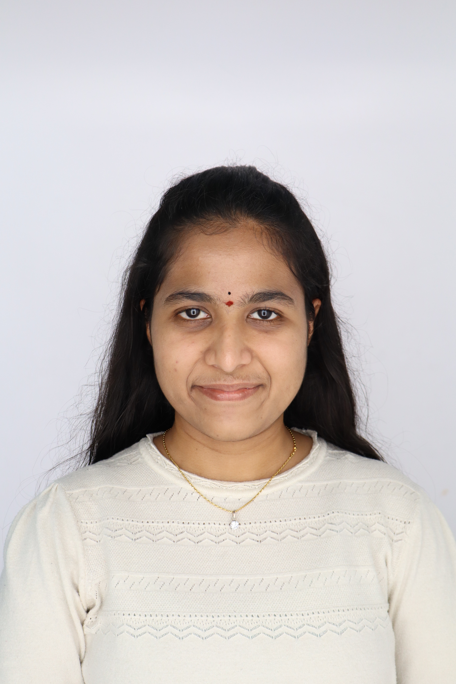

I'm an AI/ML Engineer and Data Analyst based in San Antonio, Texas. I build end-to-end pipelines, predictive models, and dashboards that turn messy datasets into decisions people can act on — graduating with a 4.00 GPA and actively seeking full-time opportunities.

assets/images/portrait.jpg
I recently graduated with a Master of Science in Artificial Intelligence from the University of Texas at San Antonio with a 4.00 GPA. My passion lies in transforming data into intelligent solutions through artificial intelligence, machine learning, data science, data analytics, and software engineering.
Throughout my academic, research, and professional experience, I've built end-to-end machine learning models, predictive analytics solutions, interactive dashboards, and data-driven applications — working hands-on with large datasets, feature engineering, statistical modeling, and deployment.
Beyond academics, I've served as a Lab Assistant, Human Resources Intern, and held leadership roles with IEEE and DataVedi Club, where I mentored technical workshops, coordinated large-scale events, and collaborated across cross-functional teams.
Roles spanning data analysis, HR operations, and technical leadership across the U.S. and India.
Languages, frameworks, and platforms used across coursework, research, and projects.
Verify buttons link to credential pages — placeholders below, ready to swap in your real credential URLs.
End-to-end builds — from raw data to deployed model to interactive dashboard. Repo links are placeholders; wire them up to your GitHub repos.
Received $1,000 in recognition of academic excellence and contribution as a Lab Assistant in the Department of Electrical Engineering.
Led marketing and promotion for Avishkar 2K23, the flagship IEEE VBIT event, and mentored the junior organizing committee on strategy and audience engagement.
Coordinated alumni engagement and communication between alumni, students, and faculty; supported Congregate 5.0, an event attended by 500+ participants.
Open to full-time opportunities in AI/ML, Data Analytics, and Software Engineering. Let's connect and discuss how I can contribute to your team
Download Résumé (PDF)